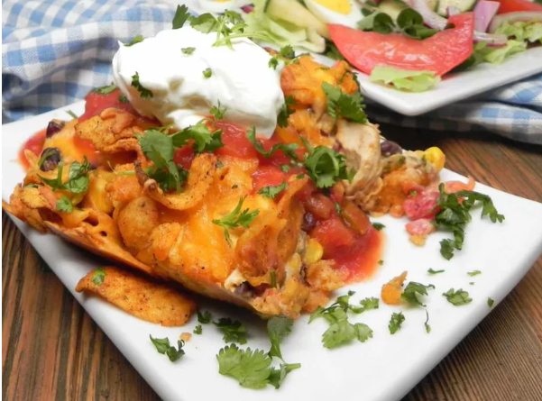

Chicken Casserole
Back to Homepage

This chicken casserole topped with chili cheese Fritos is cheesy, crunchy, colorful, loaded with flavor, and the ultimate comfort food. Better yet, the prep only dirties up one pot. Serve with salsa, sour cream, and chopped cilantro if you like.
Prep Time: 10 mins
Cook Time: 40 mins
Stand Time: 30 mins
Total Time: 1 hr 20 mins
Servings: 8
Ingredients
- 1 tablespoon unsalted butter
- 1 small onion, chopped
- 4 cups cubed cooked chicken breast
- 1 (15.25 ounce) can black beans, rinsed and drained
- 1 (15.2 ounce) can corn, drained
- 1 (10.5 ounce) can condensed cream of chicken soup
- 1 (10 ounce) can diced tomatoes and green chiles
- 1 (4 ounce) can chopped green chilies
- 1 (4 ounce) package cream cheese
- 1/3 cup chopped fresh cilantro
- 2 cups shredded Cheddar cheese
- 1 (10 ounce) bag chili and cheese flavored corn chips
Directions
- Preheat the oven to 350 degrees F (175 degrees C).
- Melt butter in a large saucepan over medium heat. Add onion and cook until softened, about 5 minutes.
- Add chicken, beans, corn, cream of chicken soup, tomatoes and chiles (with juice), green chiles, cream cheese, and cilantro. Cook until cream cheese has melted, about 5 minutes.
- Spread out 1/3 of the chips on the bottom of a 9x13 inch rectangular casserole dish. Top with 1/2 of the chicken mixture. Top chicken mixture with 1/3 of shredded Cheddar cheese. Repeat the layer. Top the 2nd layer with remaining 1/3 of the chips and remaining 1/3 of Cheddar cheese.
- Bake in the preheated oven until cheese has melted and is lightly browned, about 30 minutes. Remove from the oven, cover, and let sit for 30 minutes so it can set before cutting into squares.